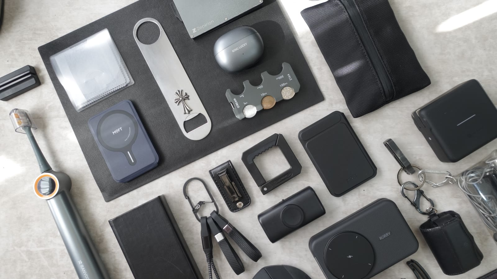

4.5room
youtube ／ 2022.12.14 —
登録者 6,140 ／ 動画 253本
間取り
rooms発信している場所と、いまそこにあるもの。
01
YouTube（本編）
登録者 6,140 ／ 動画 253本
2026.08.08【悪魔のマットレス】ベッドから出られなくなりました。
2026.08.02整理術不要のバックパック｜見た目はオタク。使うと可愛い。
2026.07.31MacBookの入るスリングバッグが快適過ぎた。
open ↗
02
YouTube（Lab）
登録者 690 ／ 動画 19本
2026.07.08【い】日本で23番目くらいに雑なデスクツアー｜2026/07/09
2026.05.01【ゆる回】最近買った"ちょっと変なもの"5つ紹介します
open ↗
03
note
動画にできない長さの話
2026.07.26「一生モノ」は、名詞ではなく動詞だった
2026.05.29「会話」をやめ、「発注」を始めよう
open ↗
04
Instagram
写真
open ↗
05
持ちもの
15点 ／ 4分類
below ↓
06
お仕事
ねとらぼ（ITmedia）に記事化・Yahoo!ニュース配信
open →
数値は YouTube Data API 実測（2026.08.09 時点）。登録者数はYouTubeの仕様により概数で表示されます。
かばん
bags回ごとの中身は、それぞれのページに。日付は動画を公開した日。
01
tomtoc アーバンEX T77
2026.08.02
中身 →
02
tomtoc Explorer T21
2026.07.31
中身 →
03
2wayバッグ｜iPad mini編
2026.05.24
中身 →
04
読書かばん その２
2026.05.17
中身 →
05
読書かばん
2026.04.19
中身 →

2026.05.16 ／ ZV-1

2023.01 ／ ZV-1
持ちもの
things動画で紹介して、そのまま日常に残ったものだけ。日付は、その道具を動画で紹介した月。
かばんまわり3
手で書くための道具4
持ち歩く机4
腰まわり4

2026.03 ／ ZV-1
StandardProductsスマホショルダー（BL）
DELFONICSロルバーン ポケット付メモ ミニ
AppleiPad mini（第6世代）
パイロットジュースアップ4 0.4
LoopExperience 2（耳栓）
TISURチタン キーホルダー ベルトクリップ
※ 商品リンクにはAmazonアソシエイトを含むアフィリエイト広告が含まれます。価格・在庫はリンク先をご確認ください。
お仕事のご相談
動画／note記事での紹介。メディア掲載：ねとらぼ（ITmedia）・Yahoo!ニュース配信